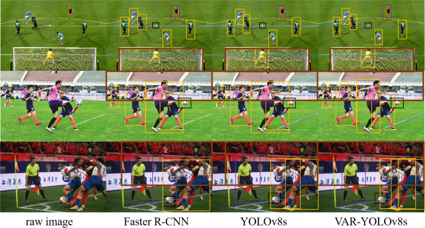
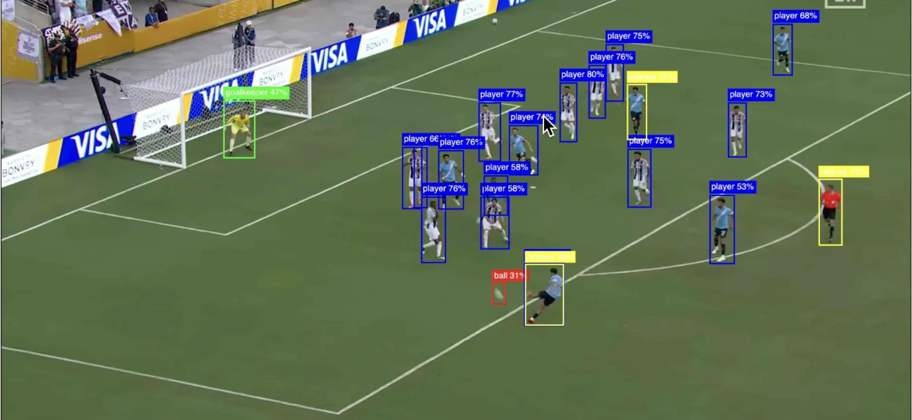

Object Detection with Convolution
R-CNN vs YOLO
1. Short overview
Object detection locates and classifies objects in an image. This article by Vincent Coulombe (Syntell, 1 Sep 2023) compares two convolutional approaches. Two-stage methods (the R-CNN family) first propose regions, then classify them, and are accurate but slow: from about 49 s per image for R-CNN down to 0.2 s for Faster R-CNN. The one-stage method YOLO processes the whole image in a single pass, with YOLO-NAS reaching about 0.002 s per image. From version 3 on, YOLO is both faster and more accurate than R-CNN. YOLOv1 divides the image into a 7×7 grid and outputs 49 candidate detections, which Non-max Suppression filters.
2. Fuller summary
Two-stage vs one-stage
Two-stage methods (R-CNN family) split detection into proposing regions that may contain objects, then classifying them. They were innovative but too slow for real time. One-stage methods (YOLO family) detect objects directly in a single step, which makes real-time uses such as autonomous driving and live surveillance possible.
The R-CNN family
R-CNN uses Selective Search to propose about 2,000 regions, which are cropped, resized and passed through a pretrained CNN. A classic classifier, an SVM, labels each one. The CNN runs 2,000 separate inferences per image, taking about 49 s. Fast R-CNN runs the CNN once on the whole image to produce feature maps, applies Selective Search on those maps, and uses a neural network instead of an SVM to classify and predict positions (taking about 2.3 s, though Selective Search still takes about 90% of the time). Faster R-CNN replaces Selective Search with a second CNN, the Region Proposal Network (RPN), reaching 0.2 s per image.

YOLO: overview
YOLO has had about ten versions, and the latest, YOLO-NAS, takes about 0.002 s per image on modern GPUs with 8-bit tensors. From YOLOv3, YOLO was both faster and more accurate than R-CNN, and the gap keeps growing. The basic principle of YOLOv1 remains the foundation of later versions.

How YOLOv1 works (theory)
The image is divided into a regular grid of cells, for example 7×7. A cell is responsible for an object only if the object’s centre falls inside it. Each cell predicts a confidence score that it contains an object centre, the centre coordinates (x, y) relative to the cell’s top-left corner, the width and height (w, h) relative to the cell, and the most likely class. This gives 7×7 = 49 potential detections, so false ones must be filtered.
How YOLOv1 works (in practice)
The output tensor is 7×7×30 = 1,470 values: 30 per cell. Each cell predicts 5 values for confidence and (x, y, w, h), another 5 values for a second attempt at the same prediction, and 20 values for class probabilities (PascalVOC has 20 classes), where only the highest is kept at inference. Weaknesses include a maximum of 49 detections, cells all the same size, slow training from random initialization, and no clear reason for two predictions per cell. Later versions fixed these issues, and the network itself is a standard CNN inspired by ResNet.
Loss function
YOLOv1 treats detection as a set of regressions. The loss is the sum of five terms: a quadratic penalty on x, y errors; a linear penalty on w, h errors; a term that raises confidence for cells containing an object centre; a term that lowers confidence for cells without one; and a classification loss, also a regression, against a one-hot vector. Training is supervised, requiring each label to specify the responsible cell, position, shape, and class.
Non-max Suppression (NMS)
Every cell produces values, even without an object, so redundant detections must be removed. Steps:
- Discard detections with confidence below a threshold (for example 0.6).
- Keep the detection with the highest confidence.
- Remove all same-class detections that overlap it.
- Repeat steps 2 and 3 until no same-class overlaps remain.
Overlap means IoU above 0.5, but this threshold depends on the problem. For counting grains on a corn cob, a lower IoU is needed so that real detections are not removed as duplicates.
Looking ahead
The author announces a follow-up on Detection Transformers (DETR), a newer family of algorithms.
3. Short overview (Key words)
- Object detection: locate + classify objects
- Two-stage (R-CNN): propose regions → classify
- R-CNN 49 s → Fast R-CNN 2.3 s → Faster R-CNN 0.2 s
- One-stage (YOLO): one pass, real time, YOLO-NAS 0.002 s
- YOLOv3 onwards: faster and more accurate than R-CNN
- YOLOv1: 7×7 grid → 49 detections → output 7×7×30
- NMS: removes redundant detections
4. Fuller summary (Key words)
Two-stage vs one-stage
- Two-stage → regions, then classification → accurate, slow
- One-stage → single pass → real time
R-CNN family
- R-CNN → Selective Search (~2,000 regions) → CNN → SVM → 49 s
- Fast R-CNN → CNN once → Selective Search on feature maps → neural network instead of SVM → 2.3 s (Selective Search ~90%)
- Faster R-CNN → RPN replaces Selective Search → 0.2 s
- Real time → ~0.03 s
YOLO overview
- ~10 versions → YOLO-NAS → 0.002 s (GPU, 8-bit)
- From v3 → faster and more accurate than R-CNN
YOLOv1
- Grid 7×7 → cell responsible if it contains the object centre
- Cell predicts → confidence, (x, y), (w, h), class
- Tensor 7×7×30 = 1,470 → 5 + 5 + 20 (PascalVOC)
- Weaknesses → max 49 detections, same cell size, slow training, unexplained two predictions
- Architecture → CNN inspired by ResNet
Loss function
- 5 terms: x, y (quadratic) → w, h (linear) → confidence with object → confidence without object → classification (one-hot)
- No IoU (v4), no cross-entropy (v3)
- Supervised training with detailed labels
NMS
- Confidence < 0.6 removed → keep highest → remove same-class overlaps (IoU > 0.5) → repeat
- Lower IoU for dense objects (corn grains)
Looking ahead
- Detection Transformers (DETR)